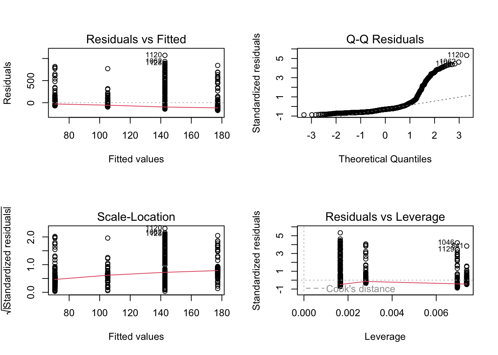
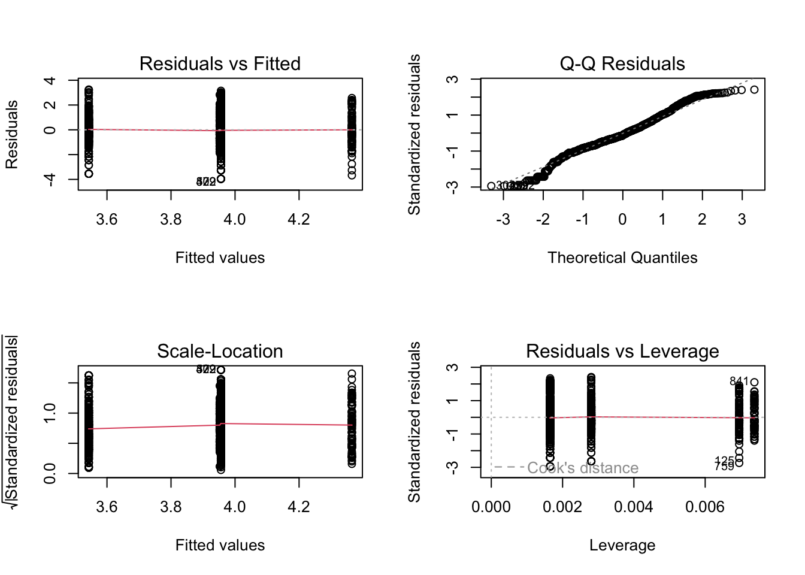

We continue with the analysis of the lung function data (PEFH98-english) by including more than one independent variable in the analysis.
1a)
Make a regression analysis with pefsit1 as dependent variable, and sex and weight as independent variables. Assess the model fit. Interpret the results.
lung_data <-read.csv('data/PEFH98-english.csv')# pefsit1 vs (weight, gender)# note that we converted gender into categoricallm_pef1_weight_gender <-lm(pefsit1 ~ weight + gender, data = lung_data)# lm_pef1_weight_gendersummary(lm_pef1_weight_gender)
Call:
lm(formula = pefsit1 ~ weight + gender, data = lung_data)
Residuals:
Min 1Q Median 3Q Max
-132.141 -46.988 -0.877 45.971 180.290
Coefficients:
Estimate Std. Error t value Pr(>|t|)
(Intercept) 224.143 60.453 3.708 0.000339 ***
weight 3.204 0.985 3.253 0.001544 **
gendermale 127.280 20.017 6.359 5.67e-09 ***
---
Signif. codes: 0 '***' 0.001 '**' 0.01 '*' 0.05 '.' 0.1 ' ' 1
Residual standard error: 68.94 on 103 degrees of freedom
Multiple R-squared: 0.6393, Adjusted R-squared: 0.6323
F-statistic: 91.29 on 2 and 103 DF, p-value: < 2.2e-16
Comments:
The regression coefficient for gender is 127.3. This is the estimated difference in lung function between men and women given the same weight.
The regression coefficient for weight is 3.20.
Both predictors are highly significant (p < 0.001).
The explained variation from the regression model is 0.639 (R^2).
Let us check the residuals of the model to conclude on the model adequacy in terms of assumptions. The residuals fit well to a normal distribution.
Call:
lm(formula = pefmean ~ height + weight + gender, data = lung_data)
Residuals:
Min 1Q Median 3Q Max
-178.443 -42.347 -4.134 50.155 172.662
Coefficients:
Estimate Std. Error t value Pr(>|t|)
(Intercept) -68.931 225.291 -0.306 0.760
height 2.213 1.571 1.409 0.162
weight 1.956 1.301 1.504 0.136
gendermale 122.597 21.555 5.688 1.26e-07 ***
---
Signif. codes: 0 '***' 0.001 '**' 0.01 '*' 0.05 '.' 0.1 ' ' 1
Residual standard error: 70.37 on 101 degrees of freedom
(1 observation deleted due to missingness)
Multiple R-squared: 0.6423, Adjusted R-squared: 0.6317
F-statistic: 60.46 on 3 and 101 DF, p-value: < 2.2e-16
Comments:
The regression coefficient for gender is 122.6. This is the estimated difference in lung function between men and women given the same height and weight.
The regression coefficient for height is 2.213 and for weight 1.956. These two predictors are not significant. The reason is that height and weight are highly correlated, and thus one of them is sufficient: we drop height and keep weight, because the latter has the smallest p-value.
Call:
lm(formula = pefmean ~ weight + gender, data = lung_data)
Residuals:
Min 1Q Median 3Q Max
-172.872 -41.467 0.706 46.601 168.533
Coefficients:
Estimate Std. Error t value Pr(>|t|)
(Intercept) 236.214 62.242 3.795 0.000251 ***
weight 3.114 1.013 3.076 0.002697 **
gendermale 132.260 20.533 6.441 3.95e-09 ***
---
Signif. codes: 0 '***' 0.001 '**' 0.01 '*' 0.05 '.' 0.1 ' ' 1
Residual standard error: 70.71 on 102 degrees of freedom
(1 observation deleted due to missingness)
Multiple R-squared: 0.6353, Adjusted R-squared: 0.6281
F-statistic: 88.84 on 2 and 102 DF, p-value: < 2.2e-16
Comments:
We now explain almost as much of the variation as in the previous analysis (63.5% vs 64.2%).
Weight is significant as well as gender.
So this second model looks better than the previous one. Is this model also good in terms of residuals? (remember to always check this!). From the histogram and the normal probability plot, the residuals appear to be normally distributed.
Conclusion: We choose the best fitting variables and avoid including variables that are highly correlated. Always good to try and reduce the model in a sensible way.
Exercise 2 (length of hospital stay)
The data was collected at the Geriatric Department at Ullevål Sykehus. Below is a description of the data set liggetid. The file includes the following variables:
Year of birth (faar)
Month of birth (fmaan)
Day of birth (fdag)
Year of hospital admission (innaar)
Month of admission (innmaan)
Day of admission (inndag)
Year of discharge from hospital (utaar)
Month of discharge (utmaan)
Day of discharge (utdag)
Gender, where 1 = male and 0 = female (kjoenn)
Admission from, where 1 = home, 2 = Div. of Medicine, 3 = Div. of Surgery, 4 = Other division, 5 = Other hospital, 6 = Nursing home (kom_fra)
Stroke, where 1 = yes, 0 = no (slag)
Age (alder)
Hospital stay, in days (liggetid)
Logarithm of hospital stay (lnliggti)
Comes from Div. of Medicine (kom_fra2)
Comes from Div. of Surgery (kom_fra3)
Comes from Other division (kom_fra4)
Comes from Other hospital (kom_fra5)
Comes from Nursing home (kom_fra6)
Censoring variable (censor)
The variable liggetid time is calculated from the innaar, innmaan, inndag, utaar, utmaan and utdag variables.
2a)
Create a boxplot for length of hospital stay for men and women.
Call:
lm(formula = liggetid ~ slag + kjoenn, data = liggetid)
Residuals:
Min 1Q Median 3Q Max
-175.3 -111.7 -59.7 1.3 1072.3
Coefficients:
Estimate Std. Error t value Pr(>|t|)
(Intercept) 142.702 8.174 17.457 < 2e-16 ***
slag 34.557 17.194 2.010 0.0447 *
kjoennmann -72.002 12.865 -5.597 2.79e-08 ***
---
Signif. codes: 0 '***' 0.001 '**' 0.01 '*' 0.05 '.' 0.1 ' ' 1
Residual standard error: 201.4 on 1050 degrees of freedom
(86 observations deleted due to missingness)
Multiple R-squared: 0.03137, Adjusted R-squared: 0.02953
F-statistic: 17 on 2 and 1050 DF, p-value: 5.398e-08
Comments:
Explained variation is just 3.1%. The reason is that both independent variables are dichotomous (i.e. have just two values). In such cases one sometimes sees a very small explained variation even though the variables may have an important effect.
The two predictors seem significant. Can we conclude that we are satisfied with the model? We first have to check residuals, see below.
Importantly, when doing so it turns out that the residuals have a very skewed distribution and do not fit well to a normal distribution. Moreover, the normal probability plot shows a huge deviation from the straight line. This fits with the fact that the data are very skewed, also showing many extreme values, as was already evident from the boxplot.
# visualize the residualspar(mfrow =c(2, 2))plot(lm_ligge)

2c)
Do the same analysis, but on the log-transformed data. The transformed variable already exists in the dataset, lnliggti. Comment on the results.
Call:
lm(formula = lnliggti ~ slag + kjoenn, data = liggetid)
Residuals:
Min 1Q Median 3Q Max
-3.9560 -0.8650 -0.1474 0.8281 3.2469
Coefficients:
Estimate Std. Error t value Pr(>|t|)
(Intercept) 3.95601 0.05470 72.327 < 2e-16 ***
slag 0.40896 0.11496 3.557 0.000391 ***
kjoennmann -0.41282 0.08604 -4.798 1.83e-06 ***
---
Signif. codes: 0 '***' 0.001 '**' 0.01 '*' 0.05 '.' 0.1 ' ' 1
Residual standard error: 1.346 on 1049 degrees of freedom
(87 observations deleted due to missingness)
Multiple R-squared: 0.03099, Adjusted R-squared: 0.02915
F-statistic: 16.78 on 2 and 1049 DF, p-value: 6.733e-08
There is a clear significant effect of both predictors when using the response on a log scale. The explained variation is unchanged. Are the residuals better? Yes! Now the residuals appear normally distributed.
par(mfrow =c(2, 2))plot(lm_logligge)

2d) Bonus task (do this only if you still have time)
(A somewhat more mathematical exercise.) Set up the regression equation for lnliggti as estimated in the previous task. Use the exponential function exp() on both sides of the equation. What kind of equation do you get now for liggetid? How much does the length of hospital stay increase for those who have a stroke? Comment.
To write the regression model on the original scale we start from the model fit on log scale: log(liggetid) = 3.956 - 0.413 * kjoenn + 0.409 * slag and then invert the relationship to get back on the original scale liggetid = exp(3.956 - 0.413 * kjoenn + 0.409 * slag) which means liggetid = 52.25 * exp(-0.413 * kjoenn) * exp(0.409 * slag)
So, the interpretation of the model is that women without stroke (slag) have an average length of hospital stay (liggetid) of 52.25 days, while those with stroke have an average hospital stay of 52.5 * exp(0.409) = 78.65 days. On the other hand, men without stroke have an average hospital stay of 52.25 * exp(-0.413) = 34.57 days, while those with stroke have an average stay of 52.25 * exp(-0.413) * exp(0.409) = 52.04 days. Thus, the hospital stay is on average shorter for men, as already evidenced by the boxplots in task a).
Source Code
---title: "Solutions - Linear regression II"description: "Dummy variables, confounding, multiple regression"format: html: code-fold: false code-tools: trueeditor: source---Datasets* Exercise 1: `PEFH98-english` ([rda link](https://github.com/ocbe-uio/teaching_mf9130e/blob/main/lab/data/PEFH98-english.rda), [csv link](https://github.com/ocbe-uio/teaching_mf9130e/blob/main/lab/data/PEFH98-english.csv))* Exercise 2: `liggetid` ([rda link](https://github.com/ocbe-uio/teaching_mf9130e/blob/main/lab/data/liggetid.rda), [csv link](https://github.com/ocbe-uio/teaching_mf9130e/blob/main/lab/data/liggetid.csv))[R Script](https://github.com/ocbe-uio/teaching_mf9130e/blob/main/lab/code/8_linearreg-II.R)------------------# Examples (exercises with solution)## Exercise 1 (lung function)We continue with the analysis of the lung function data (`PEFH98-english`) by including more than one independent variable in the analysis.#### 1a)Make a regression analysis with `pefsit1` as dependent variable, and `sex` and `weight` as independent variables. Assess the model fit. Interpret the results.```{r}#| label: linear-1a-1#| warning: false#| echo: truelung_data <-read.csv('data/PEFH98-english.csv')# pefsit1 vs (weight, gender)# note that we converted gender into categoricallm_pef1_weight_gender <-lm(pefsit1 ~ weight + gender, data = lung_data)# lm_pef1_weight_gendersummary(lm_pef1_weight_gender)```Comments:- The regression coefficient for gender is 127.3. This is the estimated difference in lung function between men and women given the same weight. - The regression coefficient for weight is 3.20. - Both predictors are highly significant (p < 0.001). - The explained variation from the regression model is 0.639 (R^2). Let us check the residuals of the model to conclude on the model adequacy in terms of assumptions. The residuals fit well to a normal distribution.```{r}#| label: linear-1a-2#| warning: false#| echo: true#residual plotspar(mfrow=c(2,2))plot(lm_pef1_weight_gender)```#### 1b)Perform a regression analysis with `pefmean` as dependent variable, and try out **combinations** of `gender`, `height`, and `weight` as independent variables.Which variables would you include in your final analysis? How much variation is explained? Assess the model fit, and interpret the results. First, include all three variables:```{r}#| label: linear-1b-1#| warning: false#| echo: true# 1. height weight genderlm_pefm_height_weight_gen <-lm(pefmean ~ height + weight + gender, data = lung_data)summary(lm_pefm_height_weight_gen)```Comments:- The regression coefficient for gender is 122.6. This is the estimated difference in lung function between men and women given the same height and weight. - The regression coefficient for height is 2.213 and for weight 1.956. These two predictors are not significant. The reason is that height and weight are highly correlated, and thus one of them is sufficient: we drop height and keep weight, because the latter has the smallest p-value. - The variation explained by the model is 0.642.In the second step, we remove height:```{r}#| label: linear-1b-2#| warning: false#| echo: true# 2. weight genderlm_pefm_weight_gen <-lm(pefmean ~ weight + gender, data = lung_data)summary(lm_pefm_weight_gen)```Comments:- We now explain almost as much of the variation as in the previous analysis (63.5\% vs 64.2\%). - Weight is significant as well as gender. So this second model looks better than the previous one. Is this model also good in terms of residuals? (remember to always check this!). From the histogram and the normal probability plot, the residuals appear to be normally distributed.```{r}#| label: linear-1b-3#| warning: false#| echo: true#residual plotspar(mfrow=c(2,2))plot(lm_pefm_weight_gen)```Conclusion: We choose the best fitting variables and avoid including variables that are highly correlated. Always good to try and reduce the model in a sensible way.## Exercise 2 (length of hospital stay)The data was collected at the Geriatric Department at Ullevål Sykehus. Below is a description of the data set `liggetid`. The file includes the following variables:- Year of birth (faar)- Month of birth (fmaan)- Day of birth (fdag)- Year of hospital admission (innaar)- Month of admission (innmaan)- Day of admission (inndag)- Year of discharge from hospital (utaar)- Month of discharge (utmaan)- Day of discharge (utdag)- Gender, where 1 = male and 0 = female (kjoenn)- Admission from, where 1 = home, 2 = Div. of Medicine, 3 =Div. of Surgery, 4 = Other division, 5 = Other hospital, 6 =Nursing home (kom_fra)- Stroke, where 1 = yes, 0 = no (slag)- Age (alder)- Hospital stay, in days (liggetid)- Logarithm of hospital stay (lnliggti)- Comes from Div. of Medicine (kom_fra2)- Comes from Div. of Surgery (kom_fra3)- Comes from Other division (kom_fra4)- Comes from Other hospital (kom_fra5)- Comes from Nursing home (kom_fra6)- Censoring variable (censor)The variable `liggetid` time is calculated from the `innaar`, `innmaan`, `inndag`, `utaar`, `utmaan` and `utdag` variables. #### 2a)Create a boxplot for length of hospital stay for men and women.```{r}#| label: linear-2a-1#| warning: false#| echo: trueliggetid <-read.csv('data/liggetid.csv')head(liggetid, 3)# boxplotboxplot(liggetid ~ kjoenn, data = liggetid)```The plots show a quite skewed distribution of the variable `liggetid`.#### 2b) We want to explain the variation in lengths of hospital stay. We will look at the independent variables `kjoenn` (gender) and `slag` (stroke). Run a regression analysis using the dependent variable `liggetid`. Also perform a residual analysis. What do you think about this analysis?```{r}#| label: linear-2b-1#| warning: false#| echo: true# response (dep): liggetid# predictor (indep): kjoenn, slaglm_ligge <-lm(liggetid ~ slag + kjoenn, data = liggetid)summary(lm_ligge)```Comments:- Explained variation is just 3.1\%. The reason is that both independent variables are dichotomous (i.e. have just two values). In such cases one sometimes sees a very small explained variation even though the variables may have an important effect. - The two predictors seem significant. Can we conclude that we are satisfied with the model? We first have to check residuals, see below.Importantly, when doing so it turns out that the residuals have a very skewed distribution and do not fit well to a normal distribution. Moreover, the normal probability plot shows a huge deviation from the straight line. This fits with the fact that the data are very skewed, also showing many extreme values, as was already evident from the boxplot.```{r}#| label: linear-2b-2#| warning: false#| echo: true# visualize the residualspar(mfrow =c(2, 2))plot(lm_ligge)```#### 2c) Do the same analysis, but on the log-transformed data. The transformed variable already exists in the dataset, `lnliggti`. Comment on the results.```{r}#| label: linear-2c-1#| warning: false#| echo: true# response (dep): log transformed (lnliggti)# predictor (indep): kjoenn, slaglm_logligge <-lm(lnliggti ~ slag + kjoenn, data = liggetid)summary(lm_logligge)```There is a clear significant effect of both predictors when using the response on a log scale. The explained variation is unchanged. Are the residuals better? Yes! Now the residuals appear normally distributed.```{r}#| label: linear-2c-2#| warning: false#| echo: truepar(mfrow =c(2, 2))plot(lm_logligge)```#### 2d) Bonus task (do this only if you still have time)(*A somewhat more mathematical exercise.*) Set up the regressionequation for `lnliggti` as estimated in the previous task. Usethe exponential function `exp()` on both sides of the equation. What kindof equation do you get now for liggetid? How much does the length ofhospital stay increase for those who have a stroke? Comment.To write the regression model on the original scale we start from themodel fit on log scale:`log(liggetid) = 3.956 - 0.413 * kjoenn + 0.409 * slag`and then invert the relationship to get back on the original scale`liggetid = exp(3.956 - 0.413 * kjoenn + 0.409 * slag)`which meansliggetid = 52.25 * exp(-0.413 * kjoenn) * exp(0.409 * slag)So, the interpretation of the model is that women without stroke (`slag`) havean average length of hospital stay (`liggetid`) of 52.25 days, while those with stroke have an average hospital stay of `52.5 * exp(0.409) = 78.65` days. On the other hand, men without stroke have an average hospital stay of `52.25 * exp(-0.413) = 34.57` days, while those with stroke have an average stay of`52.25 * exp(-0.413) * exp(0.409) = 52.04` days. Thus, the hospital stay ison average shorter for men, as already evidenced by the boxplots in task a).